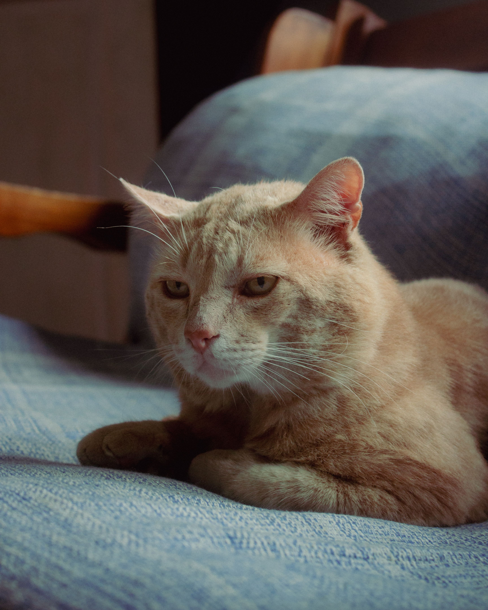
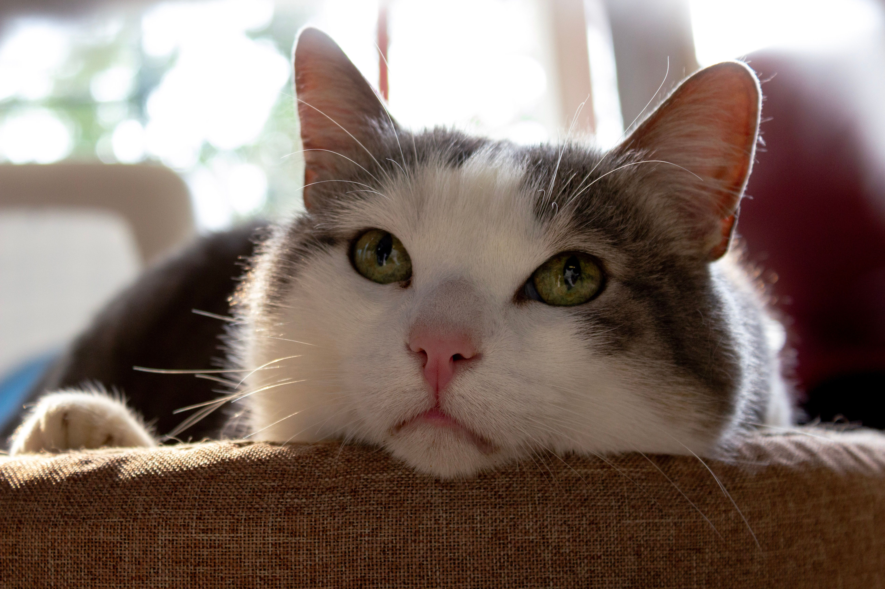
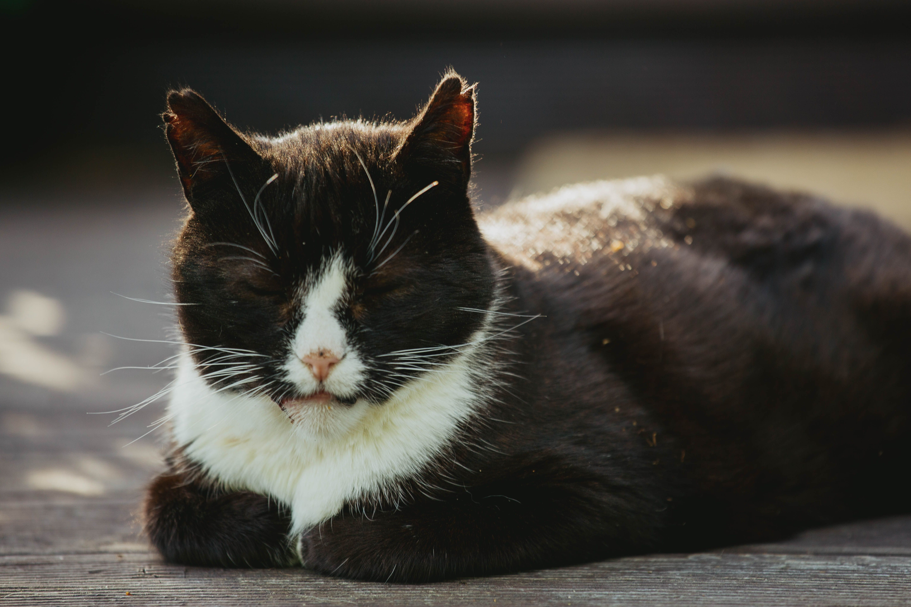

Orange Stuff is a 12 year old with the heart of a 2 year old. He's very playful, loving, and great with kids. He's a wonderful addition to any home.

Napkins is a 17 year old with a heart of gold. She's very polite and her favorite activity is to lie down next to the window.

Mel is a 20 year old lady. She has a hard time with strangers, but is very sweet when she gets to know you. She requires a lot of patience, but if you're willing to give her the time, she's an amazing family member to have.

Shadow is a 10 year old with a little sass. She loves to talk and is very good at holding conversations. She's the perfect friend for someone who loves to gossip and will never share a secret.
Couldn't find what you're looking for? While we do encourage the adoption of senior pets, we also encourage giving any pet of any age a new home. We recommend going to a local shelter, or searching on websites such as PetFinder.